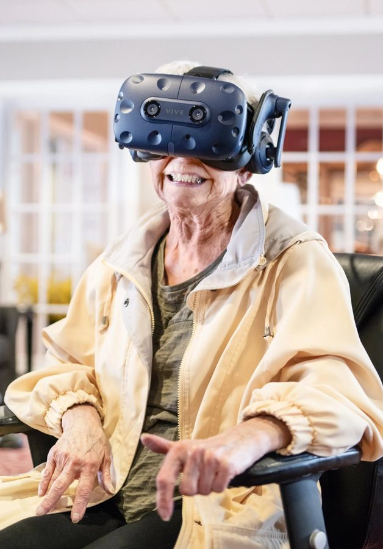
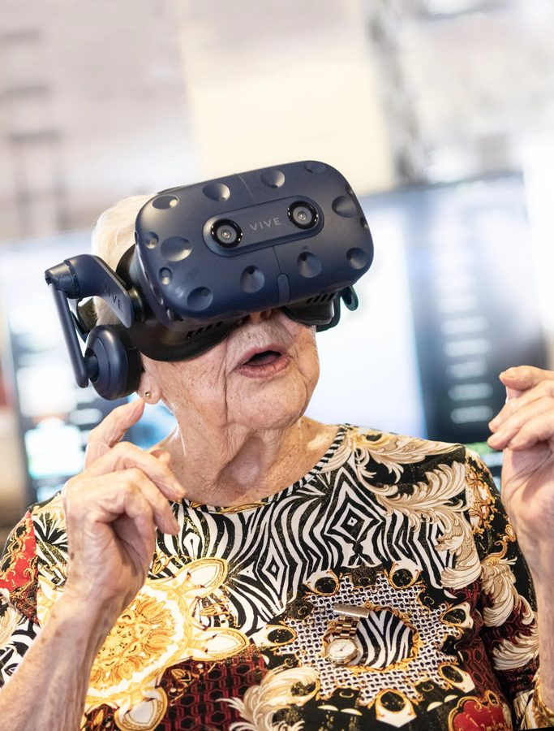

How do older adults engage with immersive technology?
This research session explored how older adults interact with emerging technologies, specifically virtual reality. The goal was to better understand usability, emotional response, and cognitive engagement when immersive technologies are introduced to senior populations.
Over an eight-hour observation session at a Sienna Senior Living residence in Kamloops, participants were invited to experience virtual environments using a VR headset. The session focused on how seniors navigated unfamiliar technology and how immersive environments influenced memory, emotion, and storytelling.
Beyond usability — the emotional and cognitive dimensions
Emerging technologies such as VR are often assumed to be difficult for older adults to use. Many design efforts focus primarily on technical usability, while the emotional and cognitive responses to immersive experiences remain less explored.
This session aimed to better understand how seniors adapt to immersive technology, whether VR environments can trigger emotional or memory responses, and what usability barriers exist for older adults.
An eight-hour observation session
The research consisted of an eight-hour interaction session with residents at Sienna Senior Living. Participants explored immersive environments through VR experiences, including geographic exploration using Google Earth and other virtual landscapes.
Observations focused on emotional response, comfort using the technology, memory recall, and storytelling triggered by the experience. Notes and observations were documented throughout the session.
What the session revealed
-
Emotional connection to familiar placesSeveral participants reacted strongly when they were able to revisit familiar locations through Google Earth in VR. One participant was able to visit their hometown remotely, which prompted an emotional response and personal storytelling.
-
Memory activationOne participant living with dementia had previously been a university professor. During the VR experience he began recalling detailed memories of the Apollo Moon landing and unexpectedly shifted into a teaching mode, explaining the event to others in the room. The audience was surprised by the clarity of his recollection. After the session he took a nap, and the memory of that moment disappeared afterward.
-
Experiencing unreachable goalsAnother participant shared stories about climbing some of the highest peaks in the United States but never having the opportunity to climb Mount Everest. Through VR he was able to experience the summit environment virtually, which became a meaningful moment of reflection.


What the research suggests
- 01 Immersive environments can trigger powerful memory recall. VR experiences connected to personal history or meaningful locations can stimulate storytelling and memory activation.
- 02 Emotional response may outweigh technical complexity. Even when the technology was unfamiliar, participants remained engaged when the experience had emotional or personal meaning.
- 03 Emerging technologies can create meaningful experiences for seniors. Immersive environments have the potential to provide exploration, reflection, and connection for individuals with limited mobility.
Technology as a bridge to memory and place
This session highlighted how immersive technology can act as a bridge between digital environments and personal memory. Beyond usability considerations, the emotional and narrative dimensions of technology interaction are essential when designing experiences for older adults.